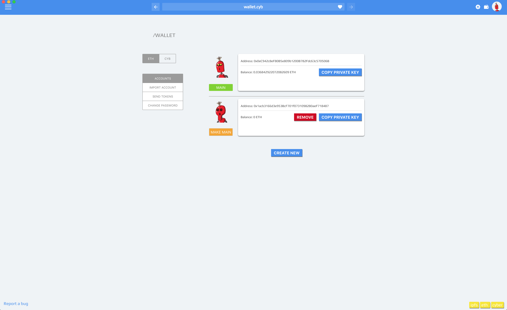

How to add own ipfs node to your Cyb
by savetheales on 2018-11-30
by @savetheales
Hey everyone! Today we’ll make the glorious step into adulthood! The greatest level of Cyb using is when you have 3 greenlights on the right side of footer ;)

Cyb uses color indication to show your connection status. Green indicator means that you have connection to local node, yellow one is for remote node and red one is for no connection at all.
So today we intend to add local IPFS node to our Cyb.
- IPFS installing
First of all we need to install and initiate IPFS node. If you’ve already did it, you can skip this section.
The easiest way to install IPFS is homebrew. All you need is just to run in your terminal
brew install ipfs,
and then run
ipfs init commands.
Other methods you can explore here, but I recommend you homebrew :)
Just for test you can write
ipfs cat /ipfs/QmYwAPJzv5CZsnA625s3Xf2nemtYgPpHdWEz79ojWnPbdG/readme
and if you see following text, everything is alright. ;)

- Start IPFS daemon
So it’s time to go online now. Write in your terminal
ipfs daemon
wait a few seconds. Now you should see

Good job!
The last step is adding local IPFS node to Cyb.
3.1 Download latest release according to your platform.
3.2 Type in search field
settings.cyband pressEnter. You should see something like this:
settings.cybmeans that you open settings page in.сybapp (same asQm.....Dvd.ipfscommand opens ipfs hash in app.ipfs.3.3 Here you can see addresses of your connections. Default connection type is for our cybernodes. So let’s change it!. Put this
http://127.0.0.1:8080in IPFS connection filed and click onupdatebutton. If everything is correct you should see:
Awesome!!! Now you can use your local IPFS node in Cyb! Welcome to your adult life!
In the next post we will learn how to import Metamask account in Cyb;)
Subscribe for our blogs:
Steemit https://steemit.com/@cybercongress
Reddit https://www.reddit.com/r/cybercongress/
Twitter https://twitter.com/cyber_devs
Telegram channel https://t.me/cybercongress
devChat https://t.me/fuckgoogle